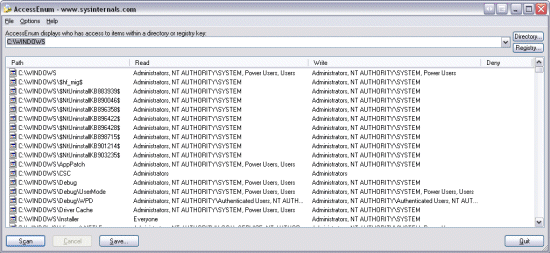

While the flexible security model employed by Windows NT-based systems allows full control over security and file permissions, managing permissions so that users have appropriate access to files, directories and Registry keys can be difficult. There's no built-in way to quickly view user accesses to a tree of directories or keys. AccessEnum gives you a full view of your file system and Registry security settings in seconds, making it the ideal tool for helping you for security holes and lock down permissions where necessary.
Read Mark's Windows IT Pro Magazine article that describes how to use AccessEnum.
AccessEnum works on Windows NT/2000/XP/2003.
Full source code to AccessEnum is provided. AccessEnum uses standard Windows security APIs to populate its listview with read, write and deny access information.
Download AccessEnum (25 KB)
Download AccessEnum with Source Code (105 KB)